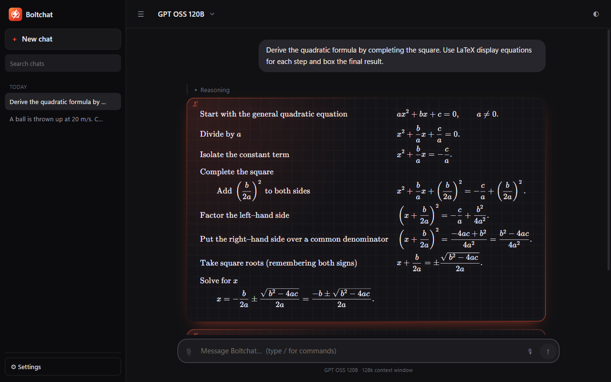
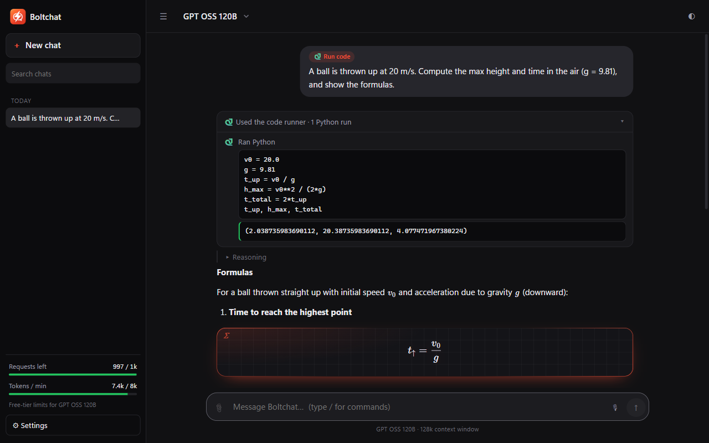

AI chat at the speed of thought
Boltchat is a focused Windows app for the open models on Groq. Answers stream in faster than you can read — with web search, a code runner, beautiful math, voice and an optional memory built in.
Free app · bring your own Groq API key (free tier available) · Windows 10 & 11

Built for people who think fast
A native-feeling Windows app with the tools that make AI answers actually useful.
Ridiculously fast
Groq's LPUs stream at 400+ tokens per second. Every reply shows its real speed.
Web search
Type /web and the model searches, reads pages and cites its sources.
Code runner
/code runs real Python for exact answers — you see the code and the output.
Beautiful math
LaTeX, matrices and chemistry typeset with KaTeX on glowing graph-paper cards.
Voice input
Speak instead of typing — Whisper transcribes you in well under a second.
Remembers you
Turn on memory and answers get more personal over time. Say “remember that…”, and see or delete every memory in Settings.
Fresh ideas
The new-chat screen suggests things to ask, drawn from your memories, the day's top stories from seven public-service newsrooms in five countries — ranked by how many independently cover them — and a few fun ideas.
Code workspace
Open a folder in the editor that powers VS Code, with search, tabs and syntax highlighting for 80+ languages.
A coding agent
Describe a task; the agent plans it, explores and reads your code, and proposes diffs you accept block by block. Every change can be undone, and a stopped run picks up where it left off.
Private by design
No account, no tracking. Chats, memories and files stay on your PC; the AI only reads folders you trust.
Faster than you can read
Most chat apps make you watch words trickle in. On Groq, whole paragraphs land in a blink — and Boltchat renders them as they arrive, math and all.
- Live tokens-per-second on every answer
- Stop, regenerate and copy in one click
- A soft chime when a long answer is done

Check every step
When Boltchat searches the web or runs code, you see the searches it made, the pages it read, the Python it ran and the exact output. Sources are one click away.
- Only offers models that can handle your request
- Report any response with one click
- Dark and light themes, six accent colors
Boltchat is almost here
Grab a free Groq API key now and you'll be chatting at full speed the moment it lands in the Microsoft Store.